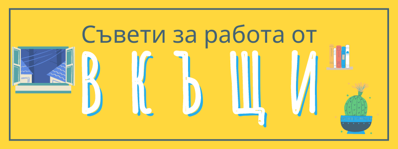

Съвети за виртуална работа
Щем, не щем в близките месеци ще ни се налага почти постоянно да работим от вкъщи. Затова съм събрала и публикувам също и тук няколко точки, върху които да се замислите, за да направите ежедневието ви по- леко и безпроблемно.
Съвети за работа от вкъщи
Ето какво би ви помогнало да се организирате да работите дистанционно:
❇️ затворете вратата, за да избегнете палави лапички да се разхождат по клавиатурата или детски пръстчета да омажат с шоколад;
❇️ определете си отделно място за работа: ако имате само леглото си, преместете възглавниците или се настанете по- различно;
❇️ доколкото е възможно спазвайте рутината си от обикновен ден;
❇️ договорете предварително граници и условия с другите души от семейството, които работят около вас;
❇️ спазвайте стриктно работното разписание, защото когато няма разделение е изкушаващо да работим до късна доба;
❇️ направете си списък със задачите;
❇️ имайте три задачи, които ако свършите ще означават успешен ден;
❇️ обличайте се все едно ще излизате, за да се чувствате спретнати и за да изглеждате що- годе прилично на Skype;
❇️ ако ви трябва спокойствие за конферентен разговор или концентрация, предупредете предварително за да пазят тишина и да не ви прекъсват, а като свършите кажете и спазвайте също така стриктно чуждите молби;
❇️ преди да се включите във видео чат, нагласете обстановката и ъгъла на камерата, тествайте аудиото и светнете лампата;
❇️ ако се чудите колко често и подробно да комуникирате с колегите, знайте че е добре по- скоро повече отколкото недостатъчно (но в рамките на бизнес часовете);
❇️ създайте си спокойна атмосфера: слушайте музика на колонките, запалете свещ, поразтребете за 10 минути;
❇️ не пускайте телевизора;
❇️ оставете смартфона си надалеч (ако не ви е нужен);
❇️пригответе си храна предварително или за няколко дни, защото няма как да ходите до ресторант (включително здравословни прилапвания), а и доставката изисква риск и предвидливост;
❇️ не забравяйте почивката: разтягайте се или отмаряйте очите си поне на половин час (примерно ползвайте техниката Помодоро: 25 минути работа, 5 минути пауза);
❇️ намерете начин да сте полезни или да покажете, че ви е грижа в тези трудни времена;
❇️ наспивайте се: дори да не трябва да пътувате, хората очакват да сте на линия, а и шансът да се разболеете намалява.
Какво правите за да се справите със сегашната ситуация?
Съвети за видео разговори
Изведнъж на повечето от нас ни се налага да пренесем комуникацията си онлайн, а не сме свиканали- особено що се отнася до видео чата.
Затова днес ви представям някои правила, които да направят тази промяна по- лесна:
📓 пратете предварително темите на срещата за да не се губи време- така и така всички сте на компютър, може да се възползвате като работите върху общ документ, оставяте коментари и правите редакции в реално време;
😃 започнете ентусиазирано или с нещо смешно, например с необикновен въпрос или забавна забележка;
🎥 кимайте или казвайте “хм” за да покажете на говорещия, че не говори напразно;
👈 по възможност обръщайте се директно към някого, а не задавайте общи въпроси защото като не сте в една стая човек по- лесно се разсейва;
🔎 не се приближавайте прекалено до екрана, защото може да накарате събеседника ви да се почувства неудобно, като на разпит;
✋ при повече участници, определете как ще вземат думата: като вдигнат ръка, сложат емоджи или напишат нещо в чата примерно "в" за въпрос;
🥡 изключете звука ако ядете (не е препоръчително, но понякога е неизбежно) или сте на шумно място;
🥛 дръжте чаша вода на бюрото или близо, за да не се налага да ставате, ако ви пресъхне гърлото;
🎧 ако има ехо, сложете си слушалки, защото е възможно звука от тонколонките да се отразява от околните повърхности;
📷 когато говорите се опитайте да гледате в камерата, защото ако гледате другите на екрана на тях им се струва, че не ги гледате в очите (сложете стикер или лепящо се листче до лещата, за да знаете накъде да гледате);
🪞 да се гледате постоянно на монитора е уморително и ви прави по- самокритични, затова изключете предварителния преглед, тоест малкото прозорче с образа ви;
📱 ако сте на мобилен телефон, опитайте се да не го размахвате много, за да не се завърти свят на гледащите;
☀ за предпочитане е да гледате към прозореца, защото ако светлината идва откъм гърба ви може да виждат само силуета ви, а така се губи човешката връзка;
💡 светнете лампата- дори да ви се струва, че няма да има ефект, камерата възприема светлината различно (пробвайте!);
📚 сложете куп книги или кутия под лаптопа за да е на нивото на очите ви;
📡 ако някой от участниците има лош интернет, изключете видеото.
***
Надявам се тези съвети да са ви полезни.
Ако искате още да опростите работата си, най- добрият начин е да се опирате на система, а да не разчитате на паметта или мотивацията си. Вижте как да си създадете такава система за продуктивност.